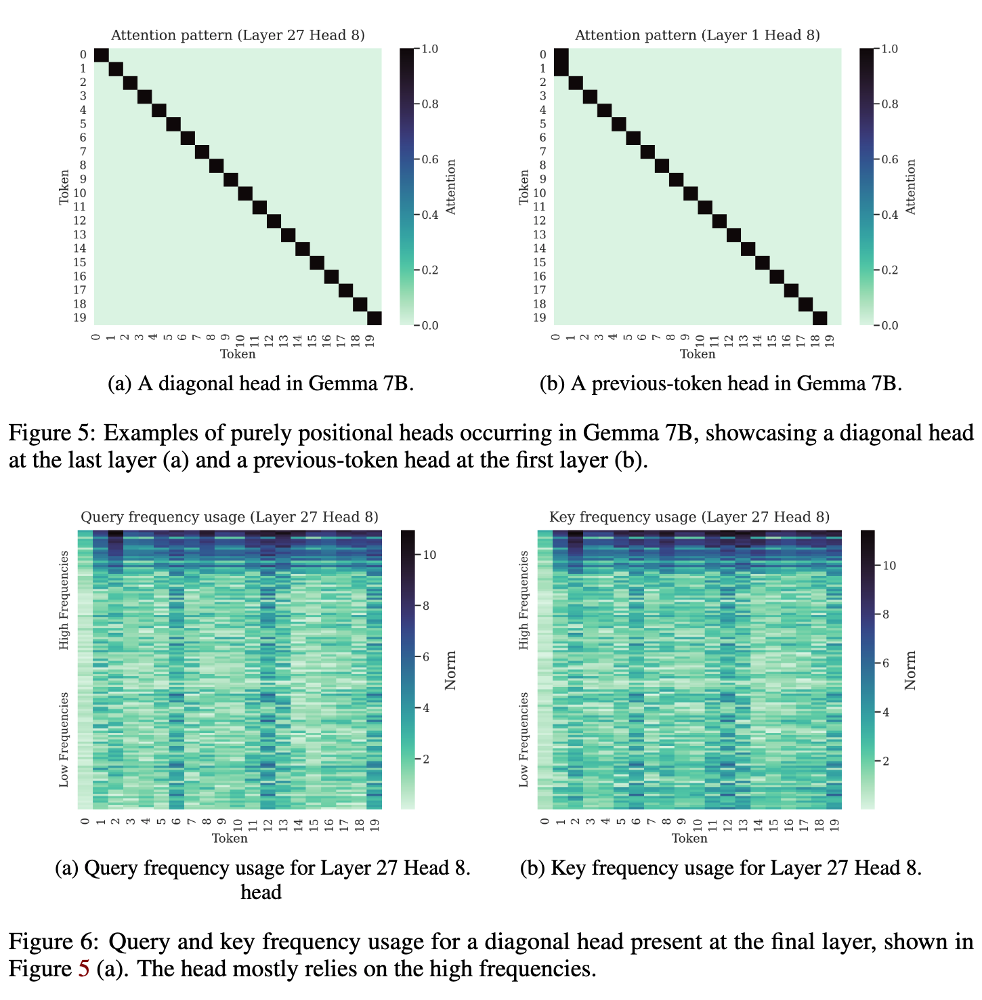

Rotary Position Embeddings
A figure among cyphers: Part-1
Why bother with position encoding?
Self-attention in transformer-based models is one of the most used operations in the history of deep learning. Though self-attention is extremely powerful, one of the weaknesses of self-attention is that it treats a sequence as a set of tokens. It is not position-aware, and it is permutation equivariant.
The order of words in a language matters; hence, we need a mechanism to insert word order information in our model. This is where position encoding kicks in.
Preliminary
Let \(S_N=\{w_i\}^N_i=1\) be a sequence of \(N\) input tokens with \(w_i\) being the ith token. Each token(word in this case) in the sequence is defined by a \(d\)-dimensional vector embedding containing no position information. The self-attention layer first incorporates position information into the word embeddings and then transforms them into queries, keys, and value representations. We can define these transforms as shown below:
\[ \begin{align} & q_m = f_q(x_m, m) \\ & k_n = f_k(x_n, n) \tag{1} \\ & v_n = f_v(x_n, n) \end{align} \]
where \(m\) and \(n\) represents the \(mth\) and \(nth\) positions respectively.
Desired properties of a position encoding
If we encode positions for the model, what would be the ideal design? The simplest thing we can do is initialize a learnable position embedding and let the model figure out the values during training. Not a bad idea for starters, but can we do better? What are the desirable properties of an encoding scheme if it is not learned implicitly? Here are a few of them:
- A unique value for every position in a sequence: The encoding scheme should assign a unique value for every position irrespective of the sequence length.
- Consistent relative distance between two positions: Irrespective of the length of a sequence, the relative distance between two positions should be consistent across sequences. For example, the relative distance between encodings of the 2nd position and 3rd position should be the same in sequences of different lengths.
- Long-term decay: An inductive bias about words is that words far distant from the current word carry less relevant information. That means our position encoding should follow a long-term decay effect for relatively distant positions.
- Extensible: What if we encounter a lengthier sequence at test time than the length of any sequence encountered during training? Ideally, we want our encoding scheme to be extensible, without much effort and breaking any other assumption.
- Deterministic: Determinism is mostly a nice-to-have property. It can help debug a few aspects if we encounter something unexpected.
There are different encoding schemes, e.g., absolute position encoding, binary encoding, relative position encoding, rotary position encoding, etc. Here, we will discuss the two most widely used position encodings: sinusoidal position encoding and rotary position encoding. Assuming the reader is familiar with concepts like absolute and binary position encodings, we will skip that discussion here. We could have skipped sinusoidal position encoding, but it lays the foundation of rotary position encoding. Also, we will try to keep the notations in line with the Roformer paper as much as possible.
Sinusoidal Positional Encoding
A typical choice for equation(1) is to formulate it this way: \[ f_t(x_i, i) = W_t(x_i + p_i) \tag{2} \\ \]
where \(t \in (q, k, v)\), and \(p_i\) is represents a \(d\) dimensional vector depending of the position of token \(x_i\). It simply means that we encode the position and add it to the token embedding.
Sinusoidal encoding was proposed in the paper Attention is All You Need. They proposed to generate \(p_i\) in the above equation using the sinusoidal function: \[ \begin{cases} p_{i,2t} &= \sin(k/10000^{2t/d}) \\ p_{i,2t+1} &= \cos(k/10000^{2t/d}) \\ \tag{3} \end{cases} \]
where \(p_{i,2_t}\) is the \(2t\)h element of the d-dimensional vector \(p\). The wavelengths form a geometric progression from \(2π\) to \(10000 · 2π\).
Many people do not know sinusoidal encoding was suggested so the model can learn to attend to relative positions. Yes, relative positions! This is mostly because people do not read papers with “attention”. Let us take an example with \(d=2\) to prove it.
\[ \begin{align*} d = 2 \rightarrow i={[0, 1]} \end{align*} \]
Let us calculate the sinusoidal position encodings for \(position=pos\) using equation 3:
\[ \begin{align*} PE_{pos,0} &= \sin(pos/10000^{2*0/d}) = sin(pos) \\ PE_{pos,1} &= \cos(pos/10000^{2*0/d}) = cos(pos) \\ \end{align*} \]
Now, let us calculate the sinusoidal position encodings for an offset $k $ i.e., \(position=pos+k\):
\[ \begin{align*} PE_{pos+k, 0} &= \sin((pos+k)/10000^{2*0/d}) = \sin(pos+k) \\ PE_{pos+k, 1} &= \cos((pos+k)/10000^{2*0/d}) = \cos(pos+k) \\ \end{align*} \]
Expanding \(sin(pos+k)\) and \(cos(pos+k)\), we have:
\[ \begin{align*} \sin(pos+k) &= \sin(pos)\sin(k) + \cos(pos)\cos(k) \\ &= PE_{pos, 0} \sin(k) + PE_{pos, 1} \cos(k) \tag{4} \\ \\ \cos(pos+k) &= \cos(pos)\cos(k) - \sin(pos)\sin(k) \\ &= PE_{pos, 1} \cos(k) - PE_{pos, 0} \sin(k) \tag{5} \\ \end{align*} \]
We can combine equation (4) and equation (5) in a nice matrix notation:
\[ \begin{align*} \begin{bmatrix} PE_{pos+k,0} \\ PE_{pos+k,1} \end{bmatrix} &= \underbrace{\begin{bmatrix} \cos(k) & \sin(k) \\ -\sin(k) & \cos(k) \end{bmatrix} }_{Rotation \ Matrix} \begin{bmatrix} PE_{pos,0} \\ PE_{pos,1} \end{bmatrix} \end{align*} \]
That’s a transposed rotation matrix! So, our models have been learning to attend relative positions since 2017. If that is the case, what is wrong with sinusoidal position encoding?
Take a look at the visualization below. We have a two-dimensional vector \(x=[1, 1]\), and we add sinusoidal position encoding for different positions to this vector.
Though we assume that the model can attend to relative positions easily, the one thing that is a bit bothering is the stochasticity. Our pointer is moving almost randomly. The pattern here does not look good. But this doesn’t necessarily mean it is also bad for the model to learn, especially at scale. All we can say is that with so much stochasticity across different dimensions, the model will have a hard time learning that relative positions can be attended using a rotation matrix and that the model may start memorizing.
Another thing to note from equation (2) is that sinusoidal positional encodings are additive. This means indirectly adding the “relatedness” of two tokens to the positional encoding. A side effect of this is that two highly related tokens can get high attention scores irrespective of the distance between them. This is still okay for NLP-related problems but doesn’t hold for other domains like protein sequencing.
The authors of the Attention is All You Need paper also hypothesized that hard-coded sinusoidal positional encodings may help to extrapolate to longer sequences compared to the length of the sequences seen during training. The hypothesis does not hold in practice.
Rotary Position Encoding: The Easy Way
From the above discussion, two things are clear:
- Encoding relative positions is crucial for attention, but additive methods like sinusoidal encodings are not the best way to do it.
- Leveraging a rotation matrix in some form is a good choice for encoding relative positions.
RoPE leverages the above findings. It rotates an encoded vector by some angle θ based on its position in a sequence. Take a look at the visualization below. Here, we are using a 2D vector to demonstrate the rotation of the encoded vector for the token Python in a sequence. One interesting aspect is that the number of tokens occurring after the query token (Python in this case) does not affect the embedding. The amount of rotation is purely dependent on the token’s position in the sequence.
Is it any good? Let us take an example in 2D to demonstrate this. Suppose Python is the query token, love is the key token, and we want to compute attention scores between them in two different sequences as given below:
- Python is love
- Coding in Python is love
This is how the tokens will be rotated in each of the two sequences:
The relative distance between our query token Python and the key token love is 2θ. The inner product \(q^Tk\) remains the same in both sequences. For a 2D case, if we generalize the rotation used in RoPE, we can rewrite our rotation matrix as follows:
\[ \begin{align*} R_\Theta^p = \begin{bmatrix} \cos(p\theta) & -\sin(p\theta) \\ \sin(p\theta) & \cos(p\theta) \tag{6} \end{bmatrix} \end{align*} \]
where \(p\) is the token’s position in a sequence. Let us revisit equation(1) now:
\[ \begin{align*} & q_m = f_q(x_m, m) \\ & k_n = f_k(x_n, n) \\ & v_n = f_v(x_n, n) \end{align*} \]
The term \(q^T_mk_n\) enables knowledge conveyance between tokens at different positions in the attention mechanism. We are interested in finding a transformation with the hope that the inner product encodes position information only in the relative form:
\[ \begin{align*} \langle f_q(\boldsymbol{x}_m, m), f_k(\boldsymbol{x}_n, n)\rangle = g(\boldsymbol{x}_m, \boldsymbol{x}_n, m-n). \end{align*} \]
Let us check how RoPE fulfills this criteria. Note that \(m\) and \(n\) represents the \(mth\) and \(nth\) positions respectively. Also, to clarify \(q\) and \(k\) represent a single query and a single key. Do not get confused by the notation.
\[ \begin{align*} q_m &= f_q(x_m, m) = R_\Theta^m \ W_q x_m \\ k_n &= f_k(x_n, n) = R_\Theta^n \ W_k x_n \\ \\ q_m^T \ k_n &= x_m^T W_q^T \ (R_\Theta^m)^T \ \ R_\Theta^n \ W_k x_n \\ &= x_m^T W_q^T \ R_\Theta^{-m} \ \ R_\Theta^n \ W_k x_n \quad \text{(Transpose of a rotation matrix is its inverse)} \\ &= x_m^T W_q^T \ R_\Theta^{n-m} \ W_k x_n \\ \end{align*} \]
So, RoPE is encoding the relative position information in the attention calculation, which we wanted. Remember the point we made about stochasticity in sinusoidal encodings? Does RoPE fare better in tha aspect? Here is how our vector moves in 2D if we use RoPE instead of sinusoidal encodings:
We looked only at a 2D case and want to generalize this for \(d\) dimensions with \(d > 2\). But before doing that, let us look at it from another angle, similar to what was presented in the Roformer paper.
Rotary Position Encoding: The Mathematical View
We are looking for something that can encode relative positions in the attention mechanism, and it should not be an additive method like sinusoidal position encoding. Mathematics is the answer to all our problems! We will exploit the geometrical properties of vectors, especially the complex form/representation of vectors. But why the complex form? We will get an answer to this question once we have finished our quest to find the desired transformation for our query and key vectors.
Let us rewrite our query and key transforms presented in equation 1, in complex form:
\[ \begin{align*} q_m &= f_q(\boldsymbol{x}_q, m) = R_q(\boldsymbol{x}_q, m) \ e^{i\Theta_q(\boldsymbol{x}_q,m)} \\ k_n &= f_k(\boldsymbol{x}_k, n) = R_k(\boldsymbol{x}_k, n) \ e^{i\Theta_k(\boldsymbol{x}_k,n)} \tag{7} \end{align*} \]
Assuming there exists a transformation \(g\) shown below capable of encoding relative position, we aim to find a solution of \(f_q\) and \(f_k\)
\[ \begin{align*} g(\boldsymbol{x}_m, \boldsymbol{x}_n, m-n) &= \langle f_q(\boldsymbol{x}_m, m), f_k(\boldsymbol{x}_n, n)\rangle \\ &= \langle R_q(\boldsymbol{x}_q, m) \ e^{i\Theta_q(\boldsymbol{x}_q, \ m)}, R_k(\boldsymbol{x}_k, n) \ e^{i\Theta_k(\boldsymbol{x}_k,\ n)} \rangle \\ &= R_g(\boldsymbol{x}_q, \boldsymbol{x}_k, n-m) \ e^{i\Theta_g(\boldsymbol{x}_q, \ \boldsymbol{x}_k, \ n-m)} \tag{8} \\ \\ \end{align*} \]
where \(R\) and \(\Theta\) represents radical and angular components respectively. Plugging them in equation 7, gives us:
\[ \begin{align*} R_q(\boldsymbol{x}_q, m)R_k(\boldsymbol{x}_k, n) &= R_g(\boldsymbol{x}_q, \boldsymbol{x}_k, n-m) \\ \Theta_k(\boldsymbol{x}_k, n) - \Theta_q(\boldsymbol{x}_q, m) &= \Theta_g(\boldsymbol{x}_q, \boldsymbol{x}_k, n-m) \tag{9} \end{align*} \]
Also, when no positional information is provided, we expect the following conditions to be satisfied:
\[ \begin{align*} \boldsymbol{q} &= \|q\|e^{i\theta_q} = f_q(\boldsymbol{x}_q, 0) = R_q(\boldsymbol{x}_q,0)e^{i\Theta_q(\boldsymbol{x}_q,0)} \\ \boldsymbol{k} &= \|k\|e^{i\theta_k} = f_q(\boldsymbol{x}_k, 0) = R_k(\boldsymbol{x}_k,0)e^{i\Theta_k(\boldsymbol{x}_k,0)} \tag{10} \end{align*} \]
When \(m=n\), we have:
\[ \begin{align*} R_q(\boldsymbol{x}_q, m)R_k(\boldsymbol{x}_k, m) &= R_g(\boldsymbol{x}_q, \boldsymbol{x}_k, 0) \ \text{using eq. 8} \\ &= R_q(\boldsymbol{x}_q, 0)R_k(\boldsymbol{x}_k, 0) \\ & = \|q\|\|k\| \tag{11a} \\ \Theta_k(\boldsymbol{x}_k, m) - \Theta_q(\boldsymbol{x}_q, m) &= \Theta_g(\boldsymbol{x}_q, \boldsymbol{x}_k, 0) \\ &= \Theta_k(\boldsymbol{x}_k, 0) - \Theta_q(\boldsymbol{x}_q, 0) \\ &= \theta_k - \theta_q \tag{11b} \end{align*} \]
From equation \((11a)\), we have \(R_g(\boldsymbol{x}_q, \boldsymbol{x}_k, n-m) = R_g(\boldsymbol{x}_q, \boldsymbol{x}_k, 0) = \|q\|\|k\|\) implying that all radial components \(R_g, R_q, R_k\) are independent from the position information.
Similarly, from equation \((11b)\), we have \(\Theta_q(\boldsymbol{x}_q, m) - \theta_q = \Theta_k(\boldsymbol{x}_k, m) - \theta_k \text{ for all } q, k, m\), which indicates that the angular components do not dependent on the query and the key vectors, and depends only on the position \(m\). We can simply this by rewriting the above equation:
\[ \begin{align*} \Theta_q(\boldsymbol{x}_q, m) - \theta_q &= \Theta_k(\boldsymbol{x}_k, m) - \theta_k \\ \Theta_q(\boldsymbol{x}_q, m) - \Theta_k(\boldsymbol{x}_k, m) &= \theta_q - \theta_k \\ \Theta_f(\boldsymbol{x}_{\{q, k\}}, m) - \theta_{\{q, k\}} &= \phi(m) \tag{12} \end{align*} \]
Suppose we have \(n=m+1\), plugging this in equation (9), and using equation (12), we get:
\[ \phi(m+1) - \phi(m) = \Theta_g(\boldsymbol{x}_q, \boldsymbol{x}_k, 1) + \theta_q - \theta_k \]
Since RHS in the above equation is a constant and does not depend on \(m\), with continuous integer inputs, it produces an arithmetic progression that can be written as:
\[ \phi(m) = m\theta + \gamma \tag{13} \]
where \(\theta, \gamma \in \mathbb{R}\) are constants and \(\theta\) is non-zero. We can simply set \(\gamma=0\).
Therefore, for a 2D case, we can write \(f_q\) and \(f_k\) as:
\[ \begin{align*} f_q(\boldsymbol{x}_m, m) &= (W_q\boldsymbol{x}_m)e^{im\theta} \\ f_k(\boldsymbol{x}_n, n) &= (W_k\boldsymbol{x}_n)e^{in\theta} \\ g(\boldsymbol{x}_m, \boldsymbol{x}_n, m-n) &= Re[(W_q\boldsymbol{x}_m)(W_k\boldsymbol{x}_n)^*e^{i(m-n)\theta}] \end{align*} \]
where \(Re[·]\) is the real part of a complex number and \((W_k x_n)^*\) represents the conjugate complex number of \((W_k x_n)\). We can further write \(f_{\{q, k\}}\) in the form of matrix multiplication as:
\[ \begin{align*} f_{\{q,k\}}(\boldsymbol{x}_m, m) = \begin{pmatrix} \cos m\theta & -\sin m\theta \\ \sin m\theta & \cos m\theta \end{pmatrix} \begin{pmatrix} W_{\{q,k\}}^{(11)} & W_{\{q,k\}}^{(12)} \\ W_{\{q,k\}}^{(21)} & W_{\{q,k\}}^{(22)} \end{pmatrix} \begin{pmatrix} x_m^{(1)} \\ x_m^{(2)} \end{pmatrix} \tag{13} \end{align*} \]
Beyond 2D
Generalizing our 2D results to \(d\) dimensions is easy. If our embeddings are d-dimensional (\(d>2\), and d is even), we can split them into \(d/2\) blocks, and for each block, we can repeat the same thing we have for the 2D case. That way, we will end up with a diagonal rotation matrix, where the value of theta differs for each dimension. We can then apply the rotation matrix to each block independently and combine the results afterward. The rotation speed varies across the blocks.
\[f_{\{q,k\}}(x_m,m) = \boldsymbol{R}^d_{\Theta,m}\boldsymbol{W}_{\{q,k\}}x_m \tag{14}\]
where
\[ \boldsymbol{R}^d_{\Theta,m} = \begin{pmatrix} \cos m\theta_1 & -\sin m\theta_1 & 0 & 0 & \cdots & 0 & 0 \\ \sin m\theta_1 & \cos m\theta_1 & 0 & 0 & \cdots & 0 & 0 \\ 0 & 0 & \cos m\theta_2 & -\sin m\theta_2 & \cdots & 0 & 0 \\ 0 & 0 & \sin m\theta_2 & \cos m\theta_2 & \cdots & 0 & 0 \\ \vdots & \vdots & \vdots & \vdots & \ddots & \vdots & \vdots \\ 0 & 0 & 0 & 0 & \cdots & \cos m\theta_{d/2} & -\sin m\theta_{d/2} \\ 0 & 0 & 0 & 0 & \cdots & \sin m\theta_{d/2} & \cos m\theta_{d/2} \end{pmatrix} \tag{15} \]
RoPE is then applied to the query and key vectors for attention calculation as:
\[ \boldsymbol{q}_m^\top \boldsymbol{k}_n = (\boldsymbol{R}_{\Theta,m}^d \boldsymbol{W}_q \boldsymbol{x}_m)^\top (\boldsymbol{R}_{\Theta,n}^d \boldsymbol{W}_k \boldsymbol{x}_n) = \boldsymbol{x}_m^\top \boldsymbol{W}_q^\top \boldsymbol{R}_{\Theta,n-m}^d \boldsymbol{W}_k \boldsymbol{x}_n \tag{16} \]
Here is an example with \(d=4\). The query vector is split into blocks of size two. Similarly, the key vector is divided, and rotation is applied to each group independently. Notice the difference in the speed of the two pointers shown below.
A recent paper from DeepMind found some interesting aspects about these frequencies. For example, in the case of Gemma-7B, these high frequencies are responsible for the diagonal head and the previous token head in some layers.

On the other hand, the low frequencies are not very sensitive to the relative distance. It helps the transformers to maintain semantic attention over a large context. This is why models with very long context windows tend to use a very high value for the base frequency (theta) in practice. For example, with a context length of 128k, LLama 3 uses a base frequency of 500,000 leading the low frequencies to rotate at roughly \(1/500,000\) radians per token.
Optimization
There is one major problem with equation 16. Our rotation matrix is sparse, and though sparsity is good in many places, it is not in this case. We are wasting memory because of that sparsity. Another issue is that equation 16 is also not computationally efficient.
We can fix both the issue with a bit of cleverness. Taking advantage of that sparsity along with elementwise operations, we can do that computation more efficiently, as shown below:
\[ \boldsymbol{R}^d_{\Theta,m} \boldsymbol{x} = \begin{pmatrix} x_1 \\ x_2 \\ x_3 \\ x_4 \\ \vdots \\ x_{d-1} \\ x_d \end{pmatrix} \otimes \begin{pmatrix} \cos m\theta_1 \\ \cos m\theta_1 \\ \cos m\theta_2 \\ \cos m\theta_2 \\ \vdots \\ \cos m\theta_{d/2} \\ \cos m\theta_{d/2} \end{pmatrix} + \begin{pmatrix} -x_2 \\ x_1 \\ -x_4 \\ x_3 \\ \vdots \\ -x_d \\ x_{d-1} \end{pmatrix} \otimes \begin{pmatrix} \sin m\theta_1 \\ \sin m\theta_1 \\ \sin m\theta_2 \\ \sin m\theta_2 \\ \vdots \\ \sin m\theta_{d/2} \\ \sin m\theta_{d/2} \end{pmatrix} \tag{17} \]
What else?
- Is RoPE all we need? Though RoPE seems the perfect encoding, it is far from ideal. For example, the idea of long-term decay does not hold in many situations with RoPE.
- What about other options like NoPE, HoPE, etc? None of these encodings is a clear winner in every case. In many situations, sinusoidal is more than sufficient. The advantage of using RoPE is that it is a solid baseline over others.
- Does RoPE work well for other modalities? People like to slap RoPE in every possible situation. Have you ever wondered how RoPE behaves with image tokens? You may find a thing or two in there.
- What about extending the context length? We will talk about it in the next part